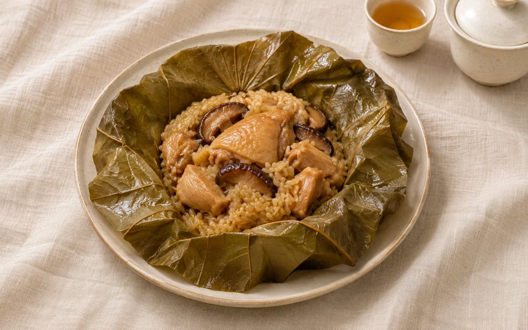

BLOOM TO TABLE
荷叶糯米鸡
食用荷叶洗净泡软，包入预熟糯米、鸡肉与香菇，蒸至馅料熟透后展开食用。
荷叶增香 · 蒸食 · 约 2 人份
准备食材
- 糯米 200 克
- 鸡腿肉 250 克
- 干香菇 4 朵
- 食用干荷叶 2 张
- 姜、生抽、少量盐及食用油
制作步骤
- 糯米按包装说明浸泡，沥水后先蒸熟；食用干荷叶泡软、洗净备用。
- 香菇泡发洗净切丁。鸡肉切小块，加姜丝、生抽拌匀，放冰箱短时腌制。
- 鸡肉与香菇先下锅炒至完全熟透，与熟糯米混合调味。
- 取荷叶铺平，包入馅料并折好，接口向下放进蒸笼。
- 水开后蒸约 20 分钟，让荷香融入糯米；确认馅料充分热透后展开荷叶食用，荷叶作为包裹材料。
选择可靠渠道的食用原料，不采摘景区或绿化带花叶入菜。本文为家常烹饪参考，并非中江独有菜式。 用量可按人数与口味调整。